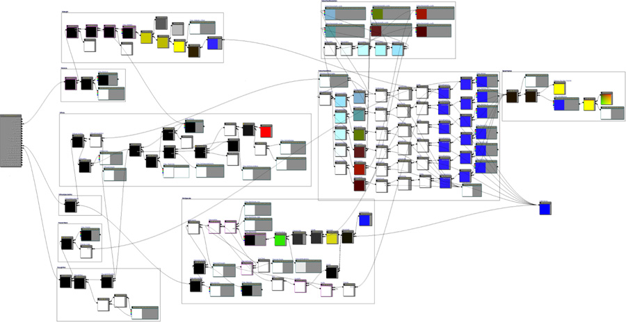
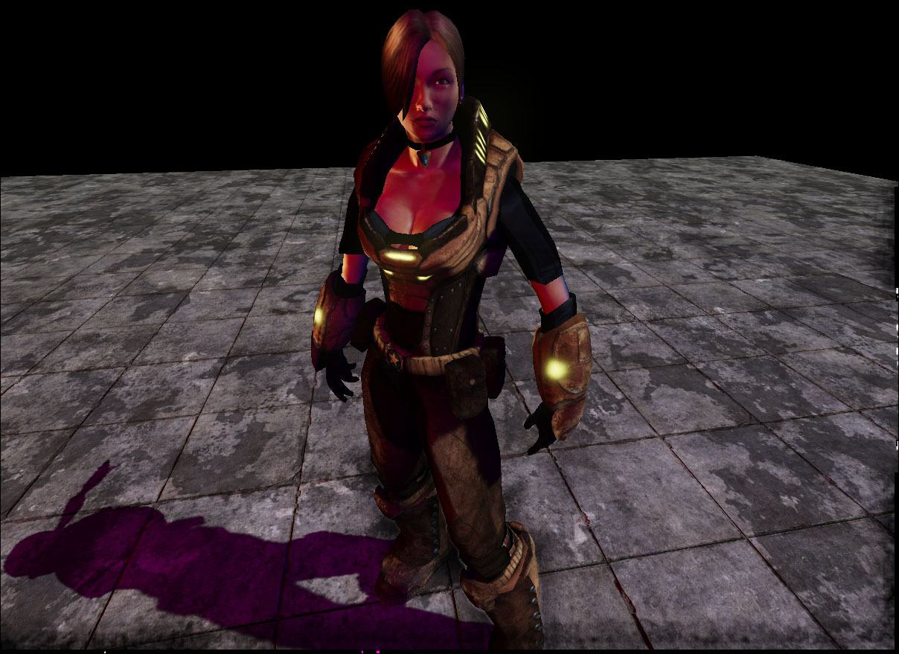
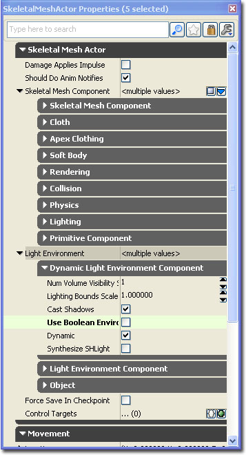
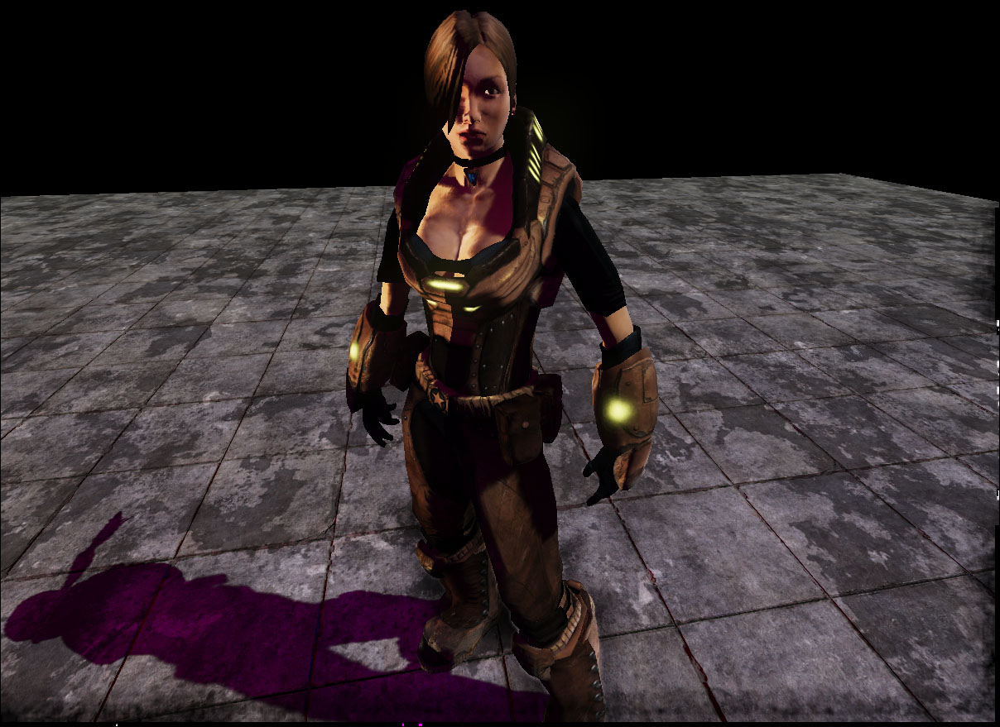
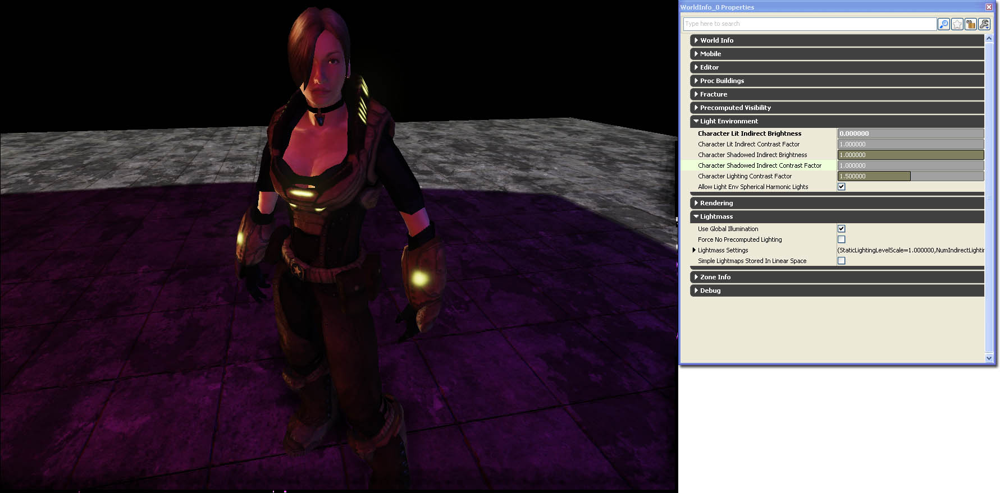
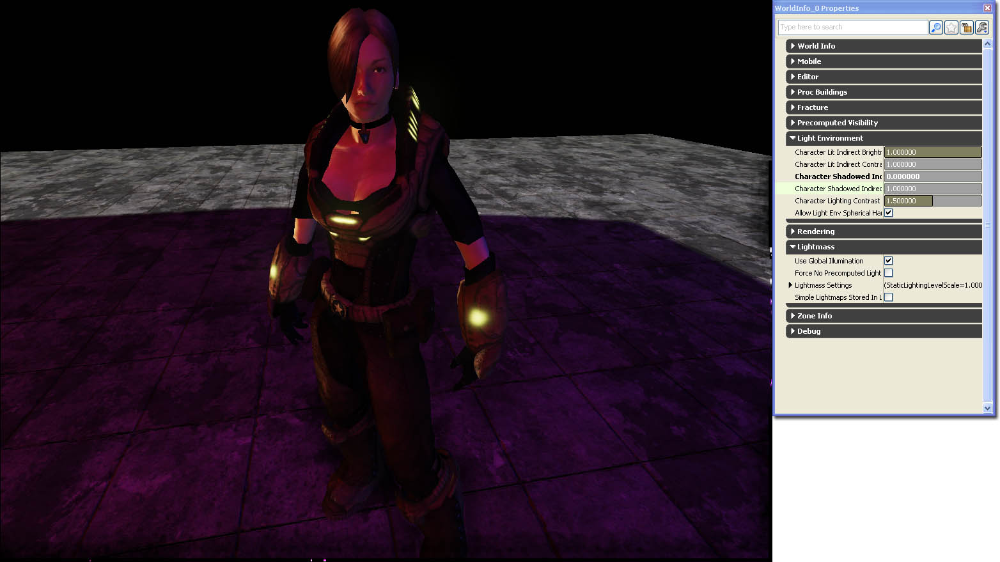
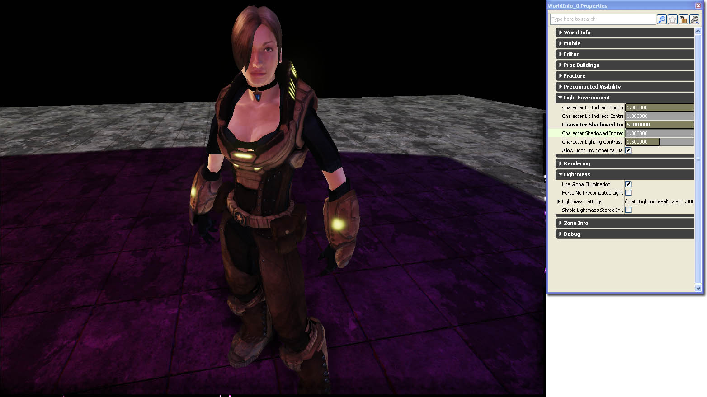
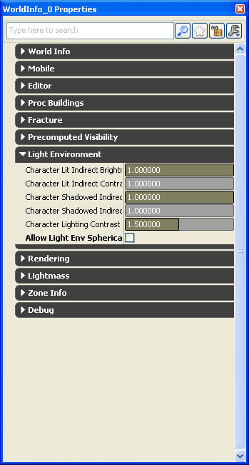
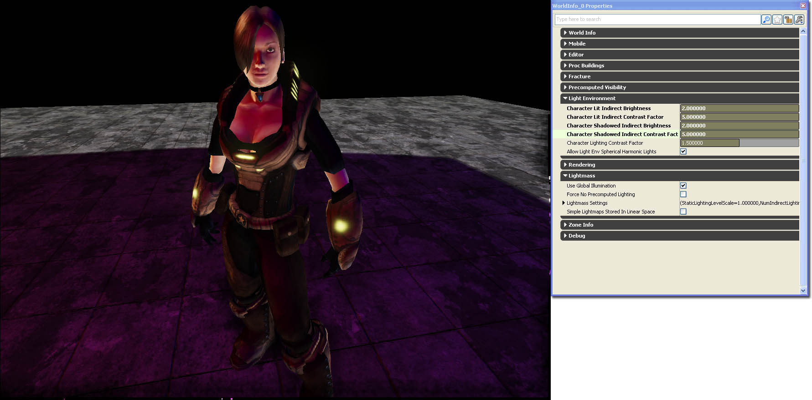

UDN
Search public documentation:
DevelopmentKitGemsCharacterLightingCH
English Translation
日本語訳
한국어
Interested in the Unreal Engine?
Visit the Unreal Technology site.
Looking for jobs and company info?
Check out the Epic games site.
Questions about support via UDN?
Contact the UDN Staff
日本語訳
한국어
Interested in the Unreal Engine?
Visit the Unreal Technology site.
Looking for jobs and company info?
Check out the Epic games site.
Questions about support via UDN?
Contact the UDN Staff
角色照明
于 2011 年 1 月对 UDK 进行最后测试
可以与 PC 兼容
概述
调整骨架网格物体组件
 然而，与这个屏幕截图相比，所有骨架网格物体已经分配物理资源，投射的阴影会更加锐化且更加清楚，而骨架网格物体表面上的整体光照效果会更加令人满意。
然而，与这个屏幕截图相比，所有骨架网格物体已经分配物理资源，投射的阴影会更加锐化且更加清楚，而骨架网格物体表面上的整体光照效果会更加令人满意。

相关主题
材质调整
添加细分法线贴图
添加细分法线贴图是一个可以改善子像素级品质的简单方法。法线贴图通常会具有一个分辨率，而光照是根据这个分辨率计算的。如果玩家更加靠近该材质，那么可能会线性过滤这个法线贴图。这可能会使光照效果变差。细分法线贴图可以帮助缓解这个问题。 添加细分法线贴图具体步骤如下所示。使用某个系数缩放细分法线贴图，通常系数为 10 - 15 效果最佳。将这个细分法线与一个可以清空蓝色通道 [Constant(1, 1, 0)] 的向量。然后将它与一个系数相乘，调整细分法线贴图的深度。最后，将最终结果添加到您的法线贴图。 在这个屏幕截图中，角色上使用的材质没有细分法线贴图。
在这个屏幕截图中，角色上使用的材质没有细分法线贴图。
 在这个屏幕截图中，材质会将细分贴图附加给它。在这里，我们可以看到照射在盔甲某些区域的提纯光线，其中有少量照射在皮肤表面。
在这个屏幕截图中，材质会将细分贴图附加给它。在这里，我们可以看到照射在盔甲某些区域的提纯光线，其中有少量照射在皮肤表面。

添加 fresnel 贴图
Fresnel 贴图可以帮助您为角色添加间接的轮廓光照。间接光照对于皮肤阴暗运用来说十分重要， 前提是皮肤渲染通常采用的细分表面散射。细分表面散射的一个侧面是将对象的轮廓光照非常微弱。 通过将 Fresnel 的结果与 Fresnel 贴图相乘完成添加 Fresnel 的操作。Fresnel 法线是您用于角色的法线贴图。简单地说，Fresnel 贴图就是要使用的颜色，所以您还可以将它与向量参数相乘，生成带颜色的 Fresnel 光照。在这个实例中，Fresnel 贴图是漫反射的灰度版本。 在这个屏幕截图中，该材质没有 Fresnel 贴图。
在这个屏幕截图中，材质会将 Fresnel 添加给它。如您所见，最终达到了失真轮廓光照效果。它可以使皮肤表面更加光亮和细腻。它还可以通过添加高光使网格物体的外观更具立体感，以此衬托阴影效果。
在这个屏幕截图中，该材质没有 Fresnel 贴图。
在这个屏幕截图中，材质会将 Fresnel 添加给它。如您所见，最终达到了失真轮廓光照效果。它可以使皮肤表面更加光亮和细腻。它还可以通过添加高光使网格物体的外观更具立体感，以此衬托阴影效果。
相关主题
自定义光照
也可以在您的角色材质上采用您自己的光照，营造出不同的效果。 该材质可以使用由 Miguel A Santiago Jr. 基于 nVidia 在细分表面散射方面的研究开发出来的细分表面散射。这是为它创建的材质，可以实现细分表面散射的各个方面以及标准虚幻竞技场 3 角色材质部分。点击缩略图，查看整个材质格局。
在这个屏幕截图中，使用的是标准虚幻竞技场 3 角色材质。 在这个屏幕截图中，使用的是启用新的细分表面散射的材质。
动态光照环境调整
使用布尔环境阴影
关闭它可以改善阴影质量，但是会消耗一部分性能。开启它的时候，它会使用环境中消耗性能较少的阴影。
在这个屏幕截图中，骨架网格物体组件的光照环境会开启布尔环境阴影。
在这个屏幕截图中，骨架网格物体组件的光照环境会关闭布尔环境阴影。阴影的轮廓会更加分明，同时阴影更加精确。
合成 SH 光线
开启这个选项将会为所有没有通过合成的方向型光源计算的光源合成球体和谐光源，营造更好的光照效果，性能消耗更多。 在这个屏幕截图中，骨架网格物体组件的光照环境关闭了合成 SHLight 选项。光照还不错。不幸的是，场景中的红色和蓝色光源会融合在一起；这样做是不正确的。
在这个屏幕截图中，骨架网格物体组件的光照环境启用了合成 SHLight 选项。场景中的红色和蓝色光源会在角色上产生完全不同的光照效果。
在这个屏幕截图中，骨架网格物体组件的光照环境关闭了合成 SHLight 选项。光照还不错。不幸的是，场景中的红色和蓝色光源会融合在一起；这样做是不正确的。
在这个屏幕截图中，骨架网格物体组件的光照环境启用了合成 SHLight 选项。场景中的红色和蓝色光源会在角色上产生完全不同的光照效果。

相关主题
世界信息角色光照环境调整
角色照明间接亮度
它可以增加或减少已经被任何局域光照亮的角色光源环境的间接光照。如果您想要均匀地增加或减少角色的整体亮度，那么请使用这个选项。
角色照明间接对比系数
它可以增加或减少已经被任何局域光照亮的角色光源环境的间接光照对比度。如果您想要通过这个系数增强较亮的区域或者通过这个系数减弱较暗区域，那么请使用这个选型。它可以帮助体现出整体立体感和角色的形状。角色投影间接亮度
它可以加强或减弱当前被所有局域光投影的角色光源环境的间接光照。如果您想要均匀地加强或减弱阴影中角色的整体亮度，那么请使用这个选项。如果阴影中的角色变得太暗，那么可以使用这个选项。

角色阴影间接对比系数
它可以加强或减弱当前被所有局域光投影的角色光源环境的间接光照对比度。如果您想要通过这个系数增强较亮的区域或者通过这个系数减弱较暗区域，那么请使用这个选型。它可以帮助体现出整体立体感和角色的形状。如果角色在阴影中变暗的时候看上去是平的，那么请使用这个选项。允许光照环境球体和谐光源
这是一个全局布尔变量，它可以启用或禁用动态光照环境功能合成球体和谐光照。 启用或禁用球体和谐光照。
在这个屏幕截图中，骨架网格物体组件可以合成球体和谐光照。消耗一定的性能，效果看上去更好。
在这个屏幕截图中，骨架网格物体组件不可以合成球谐波光照。看上去效果不怎么样，但是性能表现更好。

整体调整
在这个屏幕截图中，世界角色光照设置还没有进行调整。 在这个屏幕截图中，已经设置世界角色光照设置，而在没有向场景中加入任何新光源的情况下角色看上去更具有立体感。
在这个屏幕截图中，已经设置世界角色光照设置，而在没有向场景中加入任何新光源的情况下角色看上去更具有立体感。
